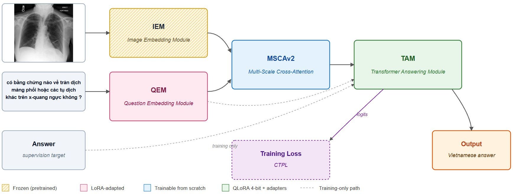
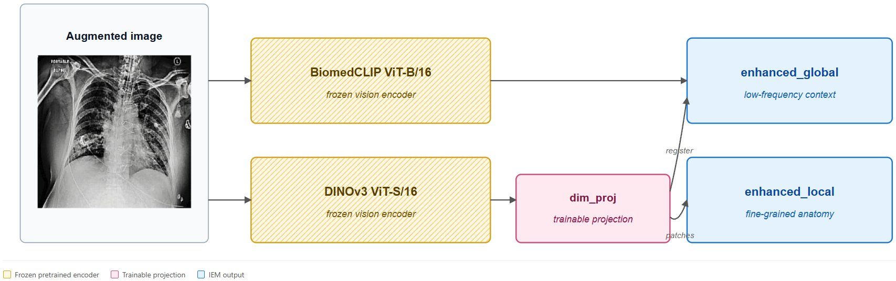
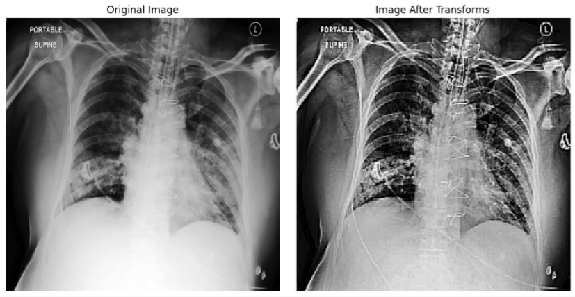
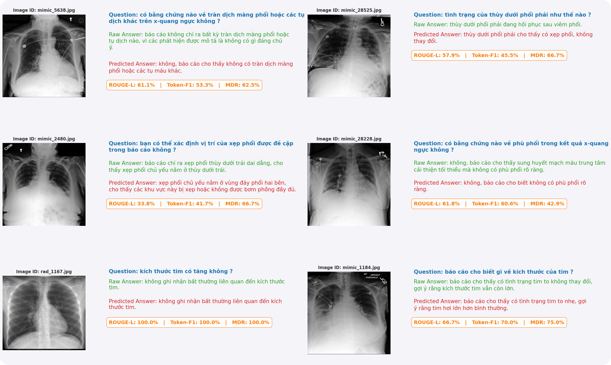

ROUGE-L
55.41
▲ +14.07 over Qwen2.5-VL
IT Project · Ton Duc Thang University · 2025–2026
An end-to-end Vietnamese Medical VQA system designed to answer free-form clinical questions regarding diverse medical imagery (including chest X-rays, brain MRIs, etc...). Built on a custom architecture combines two frozen vision encoders (BiomedCLIP and DINOv3) with a Vietnamese clinical language model (ViHealthBERT) and a Qwen2.5-3B generative backbone, bridged via a Multi-Scale Cross-Attention mechanism. Additionally, we introduce specialized medical data processing procedures, including a corpus-derived dynamic-programming syllable re-segmenter and a novel Clinical-Token Priority Loss (CTPL) function.
Faculty of Information Technology — Ton Duc Thang University, Ho Chi Minh City, Vietnam
Test set · 800 samples · beam-4 decoding
ROUGE-L
55.41
▲ +14.07 over Qwen2.5-VL
BLEU-4
27.15
▲ +14.47 over Qwen2.5-VL
MDR clinical recall
64.45
▲ +11.57 over Qwen2.5-VL
Comparison: our beam-4 score vs Qwen2.5-VL-3B (zero-shot, greedy decoding). Under matched greedy decoding our system reaches 53.06 / 24.65 / 64.58 — also above every baseline.
01 — The gap
8,000
chest-X-ray Q–A pairs we translated from MIMIC-CXR and VQA-RAD — the corpus that didn’t exist before this project.
2
The system benefits two groups of users: doctors, saving time with accurate answers from a specialized, trained, and researched model; and patients who want to learn about their illnesses.
3B
parameters — our budget, against published vision-language models ranging from 2B to 4B that we benchmark zero-shot.
Vietnamese is an analytic language with unmarked word boundaries: spaces separate syllables, not semantic words. Multilingual encoders trained on space-separated languages systematically degrade on Vietnamese clinical text — the very text that contains the patient’s symptoms, the radiologist’s impression, and the question a doctor actually wants answered.
Our hypothesis: a small system built specifically for Vietnamese medical language will outperform much larger general-purpose models on Vietnamese medical tasks. This project tests it.
02 — Method

Figure 2 · Image-Embedding Module (IEM)

The augmented X-ray flows through BiomedCLIP ViT-B/16 and
DINOv3 ViT-S/16 in parallel. BiomedCLIP contributes
domain-aligned biomedical-text-trained features at the global level;
DINOv3 contributes self-supervised structural features at the patch
level, projected by the trainable dim_proj layer to match the
shared 768-dimensional space. The module emits two heterogeneous outputs —
enhanced_global for low-frequency context and
enhanced_local for fine-grained anatomical regions — which the
MSCA adapter consumes downstream. Keeping both encoders frozen is what
makes single-T4 training feasible.
i.
A dynamic-programming syllable re-segmenter splits concatenated tokens
(timtrungthất → tim trung thất) before tokenization,
followed by Underthesea word segmentation and Unicode NFC normalization.
This single intervention drives the largest measured gain in our ablation.
ii.
BiomedCLIP provides domain-aligned features; DINOv3 provides self-supervised global structure. Both encoders stay frozen — only a small trainable projection head bridges them to the language stack, keeping training tractable on a single T4.
dim_proj · 384 → 768iii.
Standard cross-entropy weights every token equally. CTPL identifies
the top-1500 clinically meaningful Vietnamese tokens
(anatomy, pathology, negators) and up-weights them by
wclin = 1.8 during training,
so the loss is paying attention to the same words a radiologist would.
ε = 0.0503 — Data processing
Off-the-shelf preprocessing fails on medical X-rays (low dynamic range, embedded annotations) and on Vietnamese clinical text (concatenated syllables from imperfect translation, foreign drug names, medical abbreviations that no general-purpose tokenizer knows). Each pipeline below was custom-built to handle the edge cases we found in our translated VQA-RAD + MIMIC-CXR corpus.
3.1 · Image enhancement
Chest X-rays from MIMIC-CXR vary widely in contrast and exposure. During training we apply LongestMaxSize + PadIfNeeded (geometry), Rotate ±3°, BrightnessContrast ±10 %, CLAHE (clip 2.0, tile 8×8), and GaussNoise — a sequence tuned to be aggressive enough to regularize the frozen encoders, but conservative enough that no clinical finding is erased.

3.2 · Vietnamese text preprocessing
The translation pass from English to Vietnamese left the corpus full of small, hard-to-detect failures: dropped spaces, abbreviated short-forms, mixed-language drug names. Rather than hand-patching each, we built a lexicon-driven pipeline with a 41,579-entry syllable dictionary, regex-based abbreviation expansion, and a novel dynamic-programming re-segmenter that can split arbitrary concatenations into valid Vietnamese syllables — or leave them alone when no valid split exists.

Each card shows the raw input (the kind of text we actually receive
from translation) and the output our pipeline produces. Underscores
in the processed form mark multi-syllable words that the Underthesea
tokenizer joined for ViHealthBERT, e.g.
ung_thư = “cancer” as one semantic unit.
All examples are real outputs from
segment_vn_text() in main.ipynb, cell 8.
Abbreviation expansion
Raw input
HA tâm thu 140 mmHg, BN nhập viện cấp cứu
After pipeline
huyết_áp_tâm thu 140 mm_Hg , bệnh_nhân nhập_viện cấp_cứu
Short-forms HA, BN, and mmHg
are expanded to their full Vietnamese clinical terms by a curated
regex rule set, then Underthesea joins multi-syllable medical
terms with underscores.
MRI / CT tokens
Raw input
Chụp MRI não cho thấy tổn thương vùng thái dương
After pipeline
Chụp MRI_não cho thấy tổn_thương vùng thái_dương
Foreign acronyms (MRI, CT, EKG)
survive intact — the syllable validator rejects them because
they lack Vietnamese vowels. Underthesea then binds them to their
Vietnamese head noun (MRI_não) so the encoder reads
“MRI-of-brain” as a single semantic unit.
Translation artifact (concatenated)
Raw input
hình ảnh timtrung thất bình thường
After pipeline
hình_ảnh tim trung_thất bình_thường
GPT-4o occasionally drops a space, gluing two syllables
(tim + trung → timtrung).
The DP re-segmenter walks the syllable lexicon and finds the
valid split, after which Underthesea correctly joins
trung_thất (“mediastinum”) as one clinical concept.
Never-seen concatenation (graceful)
Raw input
ungthưphổitráigiaiđoạn3
After pipeline
ung_thư phổi trái giai_đoạn 3
A 23-character mash-up that appears in no dictionary. Left-to-right
longest-match backtracking through the 41,579-syllable lexicon
yields six clean syllables — no rule was hardcoded for
this input. The number 3 is also separated from
the trailing syllable by the normalization step.
Mixed problems
Raw input
BN có hìnhảnhphổi với XQ cho thấy tổnthươngnão
After pipeline
bệnh_nhân có hình_ảnh phổi với X_quang cho thấy tổn_thương não
Two abbreviations (BN, XQ) and two distinct
concatenations (hìnhảnhphổi, tổnthươngnão)
in the same sentence. Each stage of the pipeline fires
independently in order, with no interference, producing a fully
segmented and tokenized output.
Foreign medical term (left alone)
Raw input
Sử dụng paclitaxel và carboplatin cho liệu pháp
After pipeline
Sử_dụng paclitaxel và carboplatin cho liệu_pháp
Drug names like paclitaxel and carboplatin
contain letters (p, c clusters) that are not
valid Vietnamese syllables. The lexicon-validated splitter sees no
valid split exists and gracefully leaves the token
unchanged — no false splits, no data corruption.
04 — Results
Zero-shot baselines evaluated under identical Vietnamese prompts and greedy decoding. Our system is shown under beam-4 decoding; the greedy-decoding equivalent is reported above the fold.
ROUGE-L
BLEU-4
MDR
Token Acc.
All values are percentages or ratios scaled to a 0–100 axis. Table 3 of the report.
Validation split, 6 epochs, identical hyperparameters except the variable under test.
| Variant | Vision encoder | Text pipeline | LoRA | Token-F1 | ROUGE-L | BLEU-4 | MDR |
|---|---|---|---|---|---|---|---|
| E0 | BiomedCLIP | — | — | 48.09 | 51.99 | 24.11 | 63.25 |
| E1 | + DINOv3 | — | — | 45.00 | 49.69 | 22.06 | 60.51 |
| E2 | BiomedCLIP | — | ✓ | 48.78 | 52.54 | 24.26 | 63.36 |
| E3 | BiomedCLIP + DINOv3 | ✓ | ✓ | 49.18 | 53.06 | 24.90 | 62.73 |
The text pipeline (Vietnamese-aware re-segmentation + augmentation) is the single largest driver of measured gains. Dual vision is necessary but not sufficient: adding DINOv3 without the text pipeline actually decreases ROUGE-L (E1 vs E0). The components are multiplicative, not additive.
05 — Predictions
Each panel pairs the input chest X-ray with the Vietnamese question, the radiologist’s reference answer (green) and our model’s prediction (red), plus per-sample ROUGE-L, Token-F1, and MDR.

06 — Reproducibility
Source notebooks, hyperparameter table, and training environment details will be released alongside the published paper.
Architecture
Input
PEFT
Optimization
Training
Data